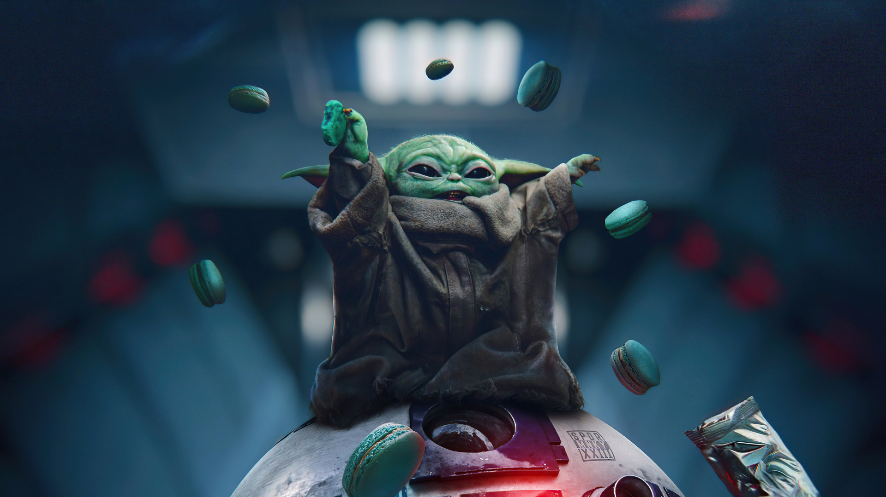
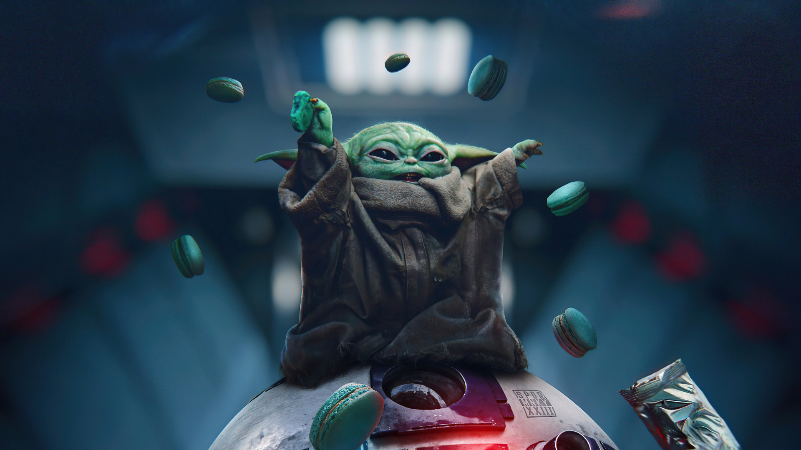

O Mandaloriano está sempre buscando formas de melhorar sua armadura, até que recebe uma missão de um cliente misterioso no submundo de Nevarro. Ele precisa rastrear e capturar um alvo sem nome, de aproximadamente cinquenta anos e, apesar de seu cliente parecer não se importar, o Dr. Pershing insiste que seja mantido vivo.